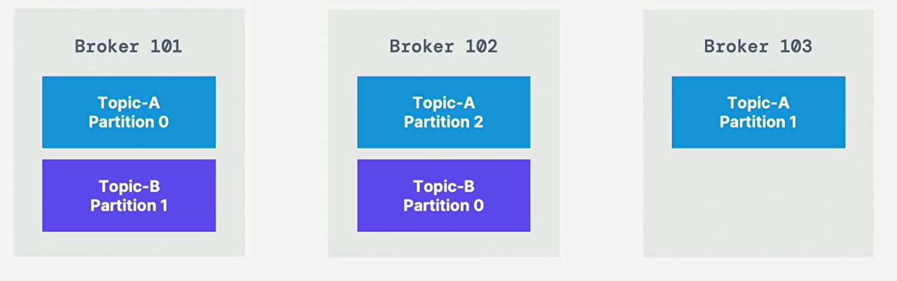
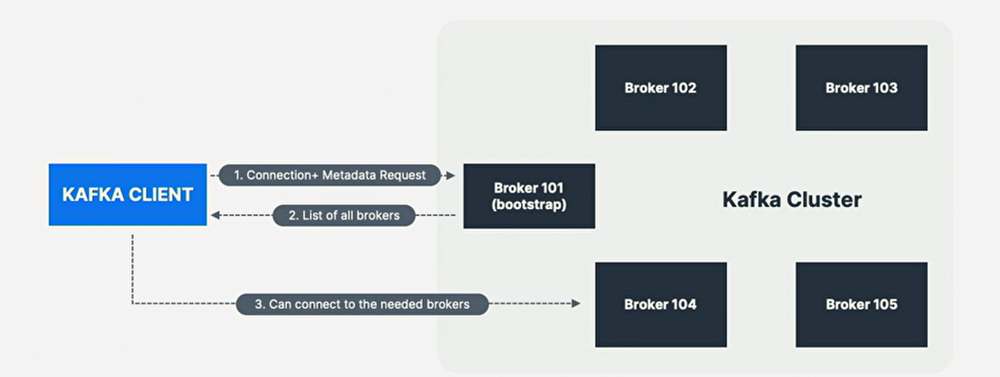

1. Kafka Broker
-
主题可能有多个分区，每个分区可能位于不同的服务器上，也称Kafka Broker；
-
单个Kafka服务器称为Kafka Broker，Broker是在Jvm上运行的程序，
通常作为Broker的服务器将只运行必要的程序，而不运行其他程序；
2. Kafka Cluster
-
kafka集群由多个broker(server)组成(is composed of)；
集群可能只包含单个或数千个Broker，开始时最好的数量是3个broker； -
每个broker由其Id(整数)标识；
-
每个broker都包含一定的主题分区(certain topic partition)；
-
连接到任何broker(称为bootstrap broker)后，将连接到整个集群
(entire cluster)，kafka客户端有智能机制(smart mechanic)；
3. Broker and Topic

-
具有3个分区的Topic-A和具有2个分区的Topic-B；
-
注：数据是分布式的，Broker 103没有任何Topic-B数据；
-
Kafka Broker将数据存储在运行它们的服务器磁盘上的一个目录中，
每个topic-partition都接收自己的子目录和相关的主题名称； -
为在主题上实现高吞吐量(throughput)和可扩展性(scalability)，
对Kafka主题进行分区，若集群中有多个Kafka Broker， -
那给定主题的分区将均匀地(evenly)分布在Broker间，
以实现负载平衡(balancing)和可扩展性(scalability)； -
broker Id和partition Id间没关系，Kafka很好的在可用的
broker间均匀的分配分区，若集群因特定broker的过载而变得不平衡，
Kafkaadministrator可重新平衡集群并移动分区；
4. Broker Discovery

-
client connect to Kafka Cluster(bootstrap server)
-
集群中的每个broker都有所有其它broker的元数据，
只需连接到一个broker即可连接到彼此；
kafka客户端将知道如何连接到整个集群(智能客户端)； -
集群中的任何broker都称引导服务器bootstrap server；
每个broker都了解所有broker，topic和partition(metadata元数据)； -
bootstrap server将向客户端返回元数据，该元数据由集群中
所有broker的列表组成，在需要时客户端将知道要连接到哪个确切的
broker来发送或接收数据，并准确地找到包含相关主题分区的broker；